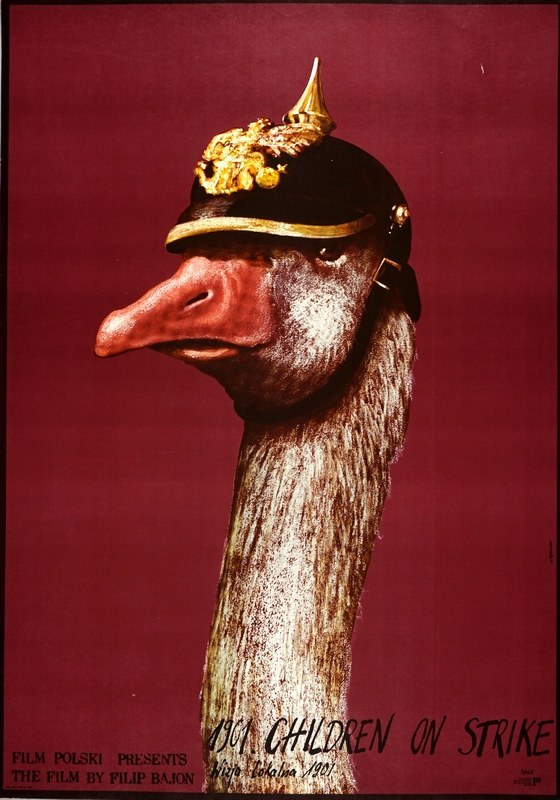
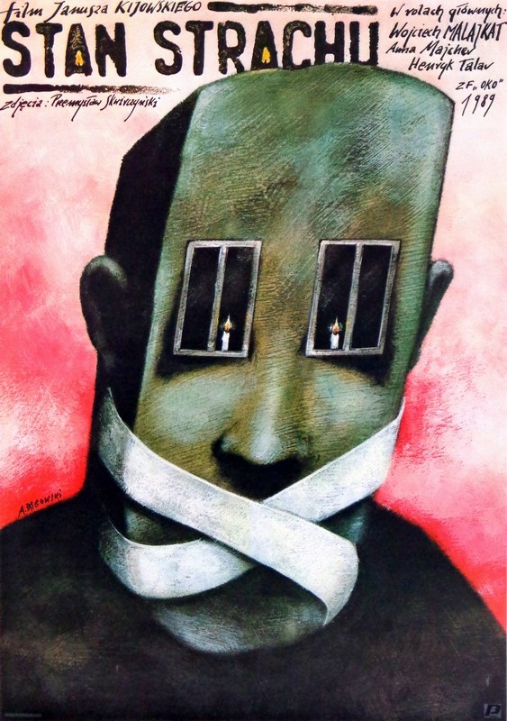

CRVI000113Kiyoshi Awazu - La Chinoise
Japanese poster for the first Japanese release of Godard's film · Athos · 1967
Japanese poster for the first Japanese release of Godard's film · Athos · 1967

CRVI000262Jakub Kamiński - Wniebowzieci
Film Poster
Film Poster

CRVI000273Andrzej Krauze - Camera Buff
Film Poster · 1979 · 1979
Film Poster · 1979 · 1979

CRVI000275Andrzej Pągowski - 1901 Children on Strike
Film Poster · 1980 · 1980
Film Poster · 1980 · 1980

CRVI000276Andrzej Pągowski - Polish Film Ltd.
Film Poster · 1989 · 1989
Film Poster · 1989 · 1989

CRVI000277Andrzej Pągowski - State of Fear
Film Poster · 1989 · 1989
Film Poster · 1989 · 1989